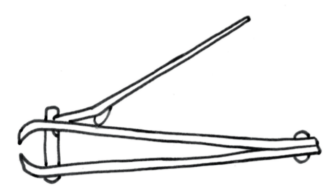
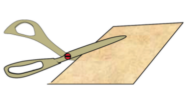
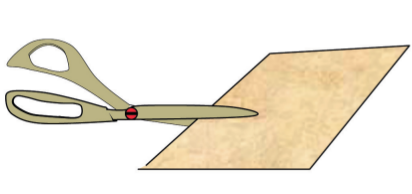
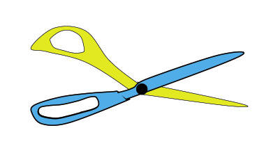
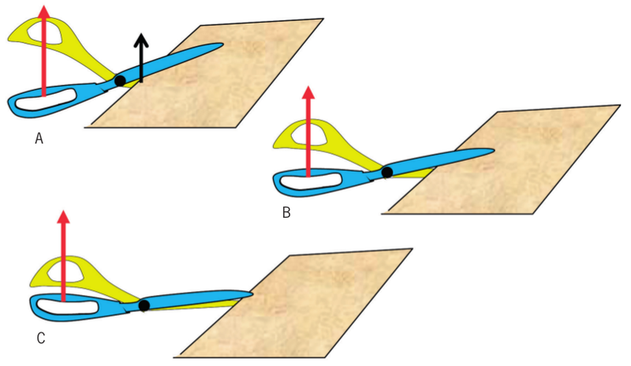
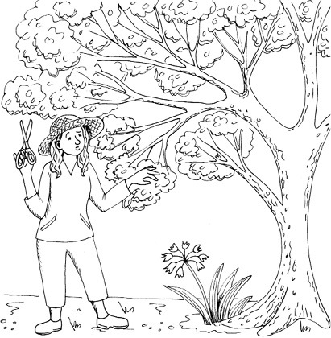
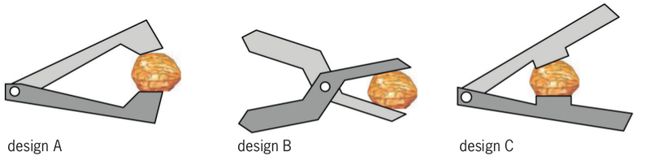
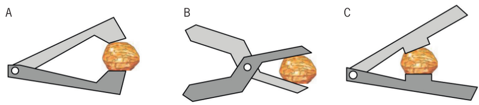
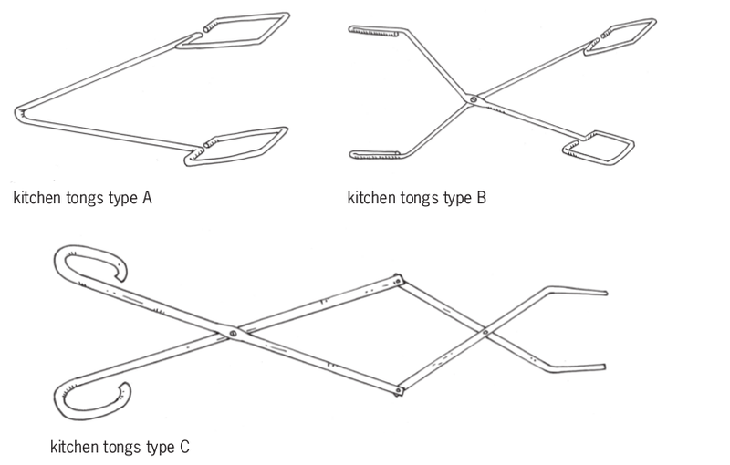
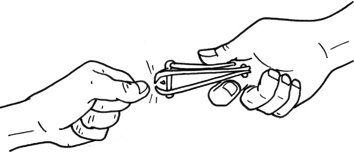

In this chapter, you will learn how
levers are combined to make different tools.
Figure
1 : A set of
pliers consists of two levers attached at the same pivot
point.

Figure 2Figure 3
Pairs of first-class levers
Work with scissors in different ways
First answer the questions below and
then do the experiment. Find out which way or method of using
scissors works the best. Look at the two methods of using
scissors in the pictures below.
Figure 4Figure 5
What is the
difference between these two methods of using scissors?
With which method
will it be the easiest to cut? Explain your answer.
Are there any
levers in a pair of scissors? If so, how many, and what kind of
levers are they?
In diagrams A, B and C below, the input force on the blue blade
is indicated with a red arrow in each instance. In diagram A
the load on the blue blade is indicated by a black arrow.
Draw an arrow to show where the load is in diagrams B and
C.

Figure 6: A pair of scissors is
actually two blades that are linked together so that they
work like two levers.

Figure 7
In which case is
the mechanical advantage of the blue lever the greatest, and in
which case is it the smallest?
In which case, or
cases, is the mechanical advantage of the blue lever bigger
than 1?
Can scissors cut thick objects?
Why will an
ordinary pair of scissors not work well to cut
the branches of a tree?

Figure 8
Make a free-hand
sketch of the type of scissors that can cut the branches of
trees. Why will it work?
Figure
9
Why will an
ordinary pair of scissors not work well to cut a crashed car
open to free trapped passengers?
Suppose you have to
design a cutting tool that can be used to cut through metal. In
which ways will this tool be different from an ordinary pair of
scissors?
More tools with levers
What is the best way to crack
a nut?
You can use pairs of levers to
compress, crush or crack things.

Figure 10
Which class of
lever is used in each of these nutcrackers?
Quickly draw a hand
in each case below to show how you can press the hardest on the
nut.
Figure 11
Mark and
label the input
force, load and fulcrum clearly on each of the above
drawings.
Which of the
three nutcrackers do you think will work best? Explain why you
think so.
A label is a word or
sentence that you write next to a drawing to describe or to
name a part of the drawing. When you write one, you are
labelling a drawing.
Three different kinds of kitchen tongs
and two pairs of pliers are shown on the next page.
Describe the
differences between type A and type B kitchen tongs.
How does type C
kitchen tongs differ from types A and B?
Which of the three
types of kitchen tongs work in the same way as a pair of
pliers? Explain your answer.
Describe a
situation in which a pair of pliers would be useful.
Make a free-hand
drawing of a pair of levers that can be used to pull out thorns
from your foot. This tool is called a pair of tweezers.
Which class of
lever did you choose for your design in question 9?
Make
a free-hand drawing of tweezers with a different class of lever
than the tweezers in your first design.
Figure 12
Figure 13
Many levers in one device
Examine and redesign a nail clipper

Figure
14
A bigger drawing of the nail clipper on
its own is shown below, and a schematic diagram of a nail
clipper is shown on the next page.
Figure
15
A schematic diagram does not
show an object as it really looks. It is drawn to show some
parts of the object more clearly than if you were looking at
the real object.
Look at the red
part on the diagram on the next page. It is a lever. What class
of lever is it when the nail clipper is used?
Show the effort and
load on the red lever with arrows and labels. Also show the
pivot point with a small triangle and a label.
Figure
16
The blue part of
the nail clipper is a pair of levers. Are they used as
first-class, second-class or third-class levers?
Show the effort and
load on one of the blue levers with arrows and labels. Also
show the pivot point with a small triangle and a label.
Is the effort on
the lower blue lever the same as the load on the red lever or
not? Explain your answer.
Can
the above design be changed so that the nail clipper could cut
harder objects than finger nails, for example pieces of metal?
Make a schematic drawing to show how that could be done and
explain why it will have a greater mechanical advantage than
the design above.
Investigate another combination of levers
The red and blue mechanism consists of two pairs
of first-class levers. The pair on the left is used to "drive"
the pair on the right.
The four yellow dots show
linkages, like the
linkages you made with paper dowels when you made levers in the
previous two chapters.
Something that is designed
to be useful when some of its parts move is called a
mechanism.
Figure
17
What do you think
is the purpose of this device?
Which of the
yellow linkages in the drawing are pivots for levers, and which
only connect one lever to another? Show this by writing labels
on the drawings above.
The word system is used to describe
something that consists of several parts that are connected
to each other in some way.
The above device can also be
described as a system of two pairs of
first-class levers.
Next week
In the next chapter, you will design a
tool to cut open car wrecks, in order to save people trapped in
crashed cars.

 Figure 3
Figure 3